25 DE ABRIL 2026 • EDICIÓN ESPECIAL SONIC CD
MÚSICA DE TODAS LAS ERAS • SHOW EN VIVO DE THE BADNIKS • TORNEO SPEEDRUN VS METAL SONIC El 25 de abril de 2026 celebramos una Sonic Fest especial dedicada a Sonic CD. Durante la jornada sonó música de Sonic de todas las épocas, con un show en vivo de The Badniks centrado en los temas de Sonic CD.
También contamos con la participación de los influencers Caraloco, Cieloween, Brendushcka, el staff de Maratón Sonic, Sonic Argentino y FrankMentol (Neo Metal Sonic) además de sectores de freeplay con Sonic 2 de Sega Genesis y Sonic Racing CrossWorlds.
Entre las actividades destacadas se realizó un torneo de Sonic CD, donde los participantes compitieron en una carrera speedrun contra Metal Sonic. Una tarde llena de música, videojuegos y comunidad para celebrar uno de los clásicos más queridos de la saga. Entrá a nuestro instagram para ver todas las fotos y videos @sonicfestok
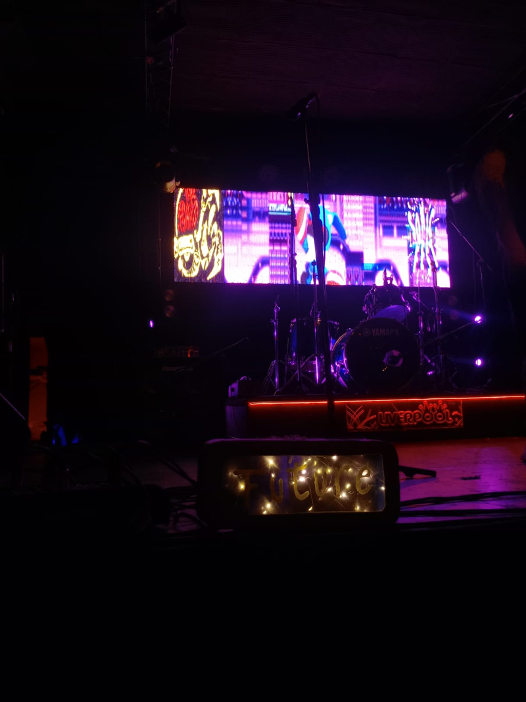
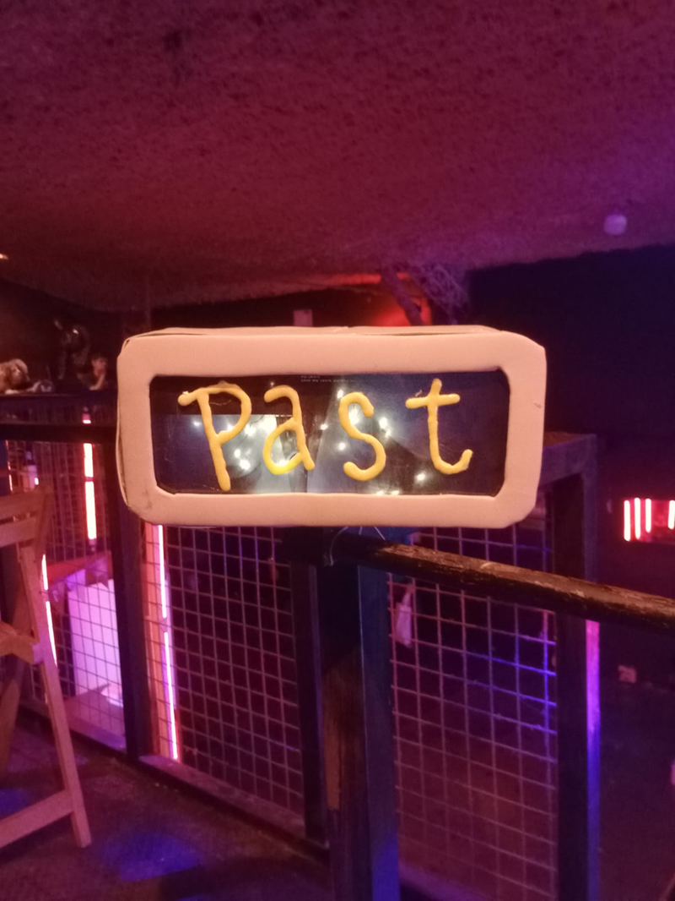
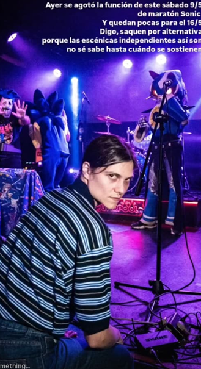
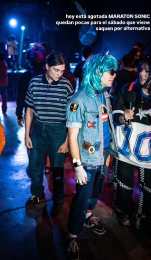
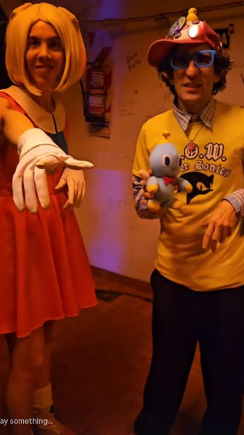
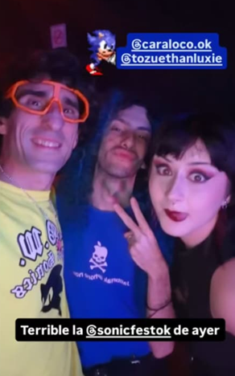
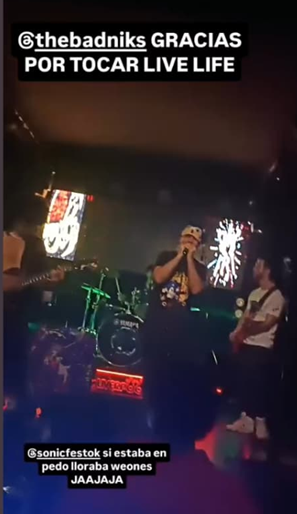
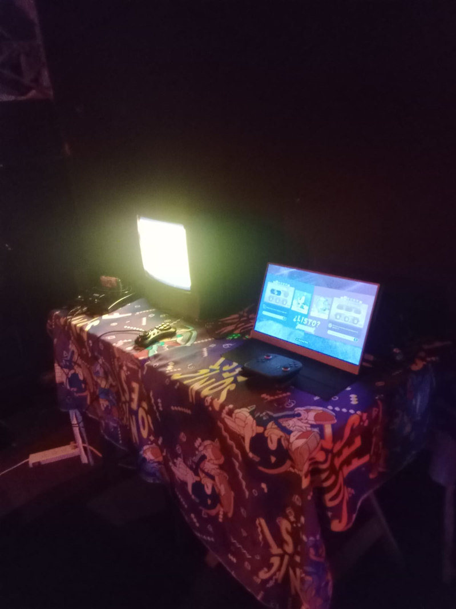
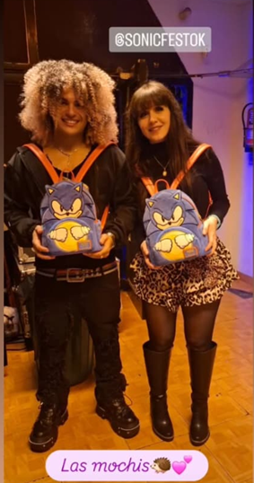
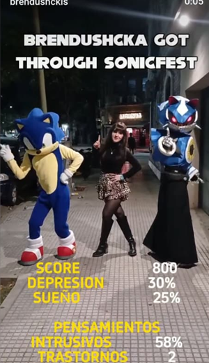
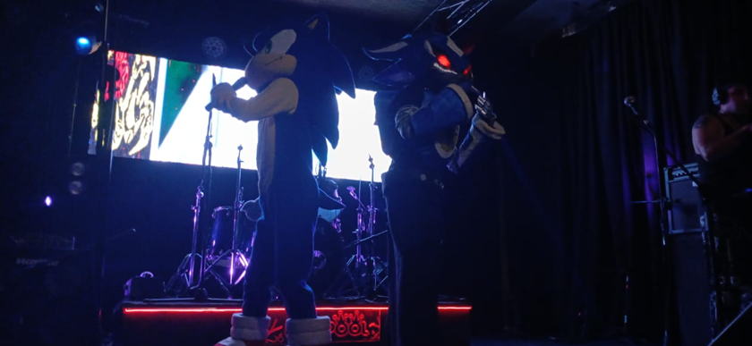